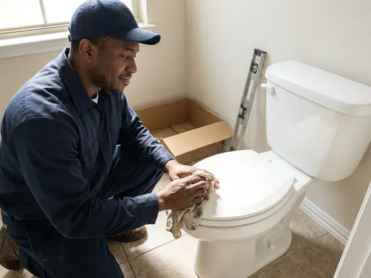

Water Softener Repair in Denver, CO
Water softener quitting in Denver, CO? GFR Plumbing fixes valves, injectors and resin on most brands.
- Fast Softener Diagnostics
- Resin Testing
- Valve Rebuilds
- Trained Technicians

Need Water Softener Repair in Denver, CO?
We find out why your softener stopped working and price it before we start.
Water Softener Repair in Denver, CO for Valves, Brine Tanks and Resin
GFR Plumbing keeps softeners working for Denver, CO homeowners. We handle resin bed problems and control valve failures alike. A good repair means the hardness reading at the kitchen tap drops back to near zero and stays there until the next salt bag goes in.
Our expertise includes:
- Motor and board replacement
- Injector, brine line and float service
- Control valve leak repair

Additional Plumbing Repair Services in Denver, CO
We offer expert plumbing repair services across Denver, CO to fix leaks, restore flow, and keep your system running smoothly.



Customers
Why Choose GFR Plumbing for Water Softener Repair in Denver, CO?
A softener that quits lets scale build up fast in water heaters and fixtures. Fixing it promptly protects every appliance that uses water. Tankless heaters are the most sensitive, and a few months of hard water can coat the heat exchanger enough to throw error codes and cut flow.
- Flat Price, You get a clear price up front, with no hidden fees.
- Prompt Visits, We respond fast so scale has less time to build.
- Local Know-How, Our technicians know local water quality and the softener problems that come up most in Denver.
Citywide Coverage
Every neighborhood in Denver is covered by GFR Plumbing, which keeps softener repair a phone call away. We know the local water and how it affects softeners.
Experienced Team
Years of hands-on work come with every GFR Plumbing technician. Most softener problems are familiar to them.
Safety-First Approach
Electrical parts and plumbing connections both need care on a softener repair. We follow the codes Denver and Colorado enforce on every job.
Trusted Certified Denver Plumbing Services Professionals
At GFR Plumbing, we take pride in licensed, certified plumbing services throughout Denver, CO. Those papers on the wall mean something. Our plumbers hold recognized industry credentials, and they follow strict safety and quality rules on every repair, installation and maintenance call we run.
Call Us Now PHCC Plumbing Contractor Recognition
PHCC Plumbing Contractor Recognition Better Business Bureau (BBB) Accreditation
Better Business Bureau (BBB) Accreditation Angi Certified Pro
Angi Certified Pro ISO 9001 Quality Management Certification
ISO 9001 Quality Management CertificationValve, Resin and Brine Repair in Denver, CO
Salt Usage and Settings Repair in Denver
Too much salt or water use usually means settings that do not match your hardness or household. An old timer head regenerates by the calendar, used or not. After retesting hardness, we reprogram the valve or swap in a metered head that regenerates only when needed. Salt bills drop.

Control Valve Troubleshooting and Repair in Denver, CO
Stuck pistons, worn seals and failed drive motors cause most control valve trouble, and the symptoms are hard water, constant regeneration or a leak at the head. We diagnose the valve on site. Our plumbers carry seal kits and pistons for Fleck, Clack and Autotrol heads, which covers a big share of the softeners installed in homes around here.
Hard Water Symptoms & Diagnostics in Denver
Scale on faucets means trouble. GFR Plumbing checks hardness at the tap, looks at each part of the system and gives you a repair plan for your Denver home. We test hardness before and after the repair, so you see the grains per gallon fall.
Water Softener Brands We Repair in Denver
Culligan, Kenmore, Whirlpool, EcoPure, Morton and GE are the softener brands we see most in Denver homes, along with store-brand models sold under other names. We know the valves and weak spots on each. GFR Plumbing stocks the wear parts, so most repairs finish on the first visit without a special order.
Brine Tank and Salt Bridge Repair in Denver, CO
A crust of salt across the brine tank stops regeneration, and hard water shows up at every tap within a day or two. The bridge gets broken up and the tank cleaned out. Cracked brine tanks on older units get replaced. Keep the salt about half full.
Water Softener Repair vs. Replacement in Denver, CO
Age and parts availability decide whether a softener is worth repairing. GFR Plumbing gives honest advice based on both. A sound tank with a rebuildable valve is worth saving, but an obsolete head without parts usually is not. We lay out both options.
Salt Bridge and Brine Tank Service in Denver, CO
The tank looks full but makes no brine. A salt bridge has formed and stopped the salt from dissolving. Bridges get broken up, mushy salt gets cleaned out and the float, brine well and safety valve get checked. Pellet salt bridges less in warm or humid spaces, so we may suggest switching if your softener sits in a hot garage.

Water Softener Leak Detection & Repair in Denver, CO
Cracked tanks, loose fittings and failed O-rings are behind most softener leaks. Even a slow drip wastes water and soaks the floor. Once we find the source, from the bypass to the drain connection, the failed seal or fitting gets replaced. We test it under pressure.
Water Softener Repair Near You in Denver, CO
Local plumbers at GFR Plumbing understand Colorado water and the appliance damage it causes in Denver homes. We set every repair for the local water.
Searching for water softener repair near me in Denver, CO turns up a lot of salt delivery services. GFR Plumbing sends an actual repair tech, usually within a day. Valve rebuilds, resin swaps and brine repairs happen on the spot, with parts for local brands on board. Soft water returns fast.
GFR Plumbing at a Glance
- Licensed and insured plumbers serving Denver, CO
- 24/7 emergency service with same-day scheduling
- Upfront, flat-rate pricing before work begins
- 4.8-star rated by 750+ Colorado customers
Denver Map
Denver Information
- Population
- 716,577
- Area codes
- 303/720/970
- Service area
- Denver and towns within a 40 mile drive
- Nearby
- Aurora, Commerce City, Thornton, Centennial
Water hardness changes from place to place in Denver, CO, and a working softener keeps scale off fixtures and heaters while making the water easier on skin and laundry.
Talk to a Plumber
Call GFR Plumbing for reliable plumbing work done by licensed pros in Denver, CO.
Our Specialized Plumbing Services in Denver, CO
At GFR Plumbing, you get every kind of plumbing service from one company across Denver, CO. From leak detection to full system installs, our team works fast and charges fair prices on homes and commercial properties alike. Take a look at our core services below:


How a Water Softener Repair Visit Works in Denver, CO
GFR Plumbing follows a clear process on every softener repair in Denver, CO.
Tell Us What You See
Call (720) 727-9398 with the brand, the age and what you are noticing, such as spotty glasses or standing brine. We schedule a visit that works for you.
Test and Diagnose
We test hardness, inspect the valve, injector, brine tank and resin and run a manual regeneration. You get a clear price before work begins.
Repair and Set Up
We replace worn parts, clean the system and program the valve for your water and household. A final hardness test confirms soft water.
Frequently Asked Questions About Water Softener Repair in Denver
Minor repairs in Denver, CO, like a sensor or a drive motor, usually run $150 to $350. A control valve rebuild or a resin replacement can land between $400 and $800 or more, depending on the brand, the tank size and how much resin it holds. You get the price first.
Yes. GFR Plumbing warranties both labor and replacement parts on every softener repair, and the terms come in writing at the time of service.
Routine repairs, like a control valve or new resin, do not usually need a plumbing permit in Denver. A full replacement or main line change may need one. GFR Plumbing will tell you if so.
A checkup every one to three years keeps most softeners out of trouble. We look at seals and pistons, clean the injector and brine tank and confirm the settings.
High-purity evaporated salt pellets bridge less and leave less residue than rock salt. Potassium chloride is an option, though it costs more and may require new settings.
Most major brands, yes. GFR Plumbing technicians work on GE, Whirlpool, Culligan, Kenmore, EcoPure and Morton models, and can get parts for nearly all of them.
Adding salt and cleaning the brine tank are fine to do yourself. Most other repairs are better left to GFR Plumbing.
One to three hours covers most repairs when the common parts are already on the truck and nothing unusual turns up during testing. A full resin replacement or a hard-to-find electrical fault can take longer. Same-day completion is the goal.
What People Are Saying About Our Plumbing Experts?

Sofia M.
Two new toilets went in during one visit. The tech set them on new wax rings and swapped the old supply lines. He also noticed our bathroom faucet dripping and replaced the cartridge while he was there. No mess left behind.
Toilet Installation · Thornton, CO
Carlos V.
Our house still had galvanized pipe, and upstairs the shower was a trickle. The crew repiped everything in PEX over three days and patched every drywall hole before they left. The pressure difference is night and day.
Repiping · Centennial, CO
James P.
Our restaurant had a slow leak at the hand sink that was rotting the cabinet base. GFR Plumbing came in at six in the morning before prep, replaced the trap and both supply lines, and was packed up before my first cook clocked in.
Commercial Plumbing · Denver, CO
Emily R.
The shutoff valve under our kitchen sink snapped off in my hand on a Sunday morning. GFR Plumbing had someone out by early afternoon. He replaced both angle stops with quarter turn valves and showed me where our main shutoff was, which I honestly did not know.
Plumbing Repair · Lakewood, COJessica T.
We were adding a gas range in a kitchen remodel and needed a new line run from the meter. The plumber pulled the permit, ran the pipe through the crawl space, and had it inspected and approved within the week.
Gas Line Repair · Commerce City, COKevin O.
Before buying our house I paid for a sewer camera inspection. GFR Plumbing found a belly in the line that held standing water about forty feet from the cleanout. We used the video to get the sellers to fix it before closing.
Sewer Camera Inspection · Centennial, CO